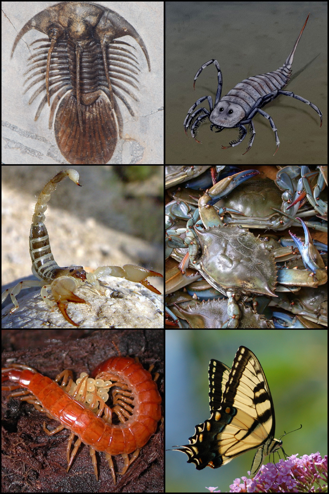
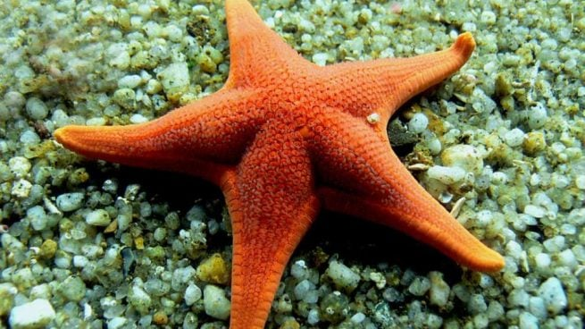
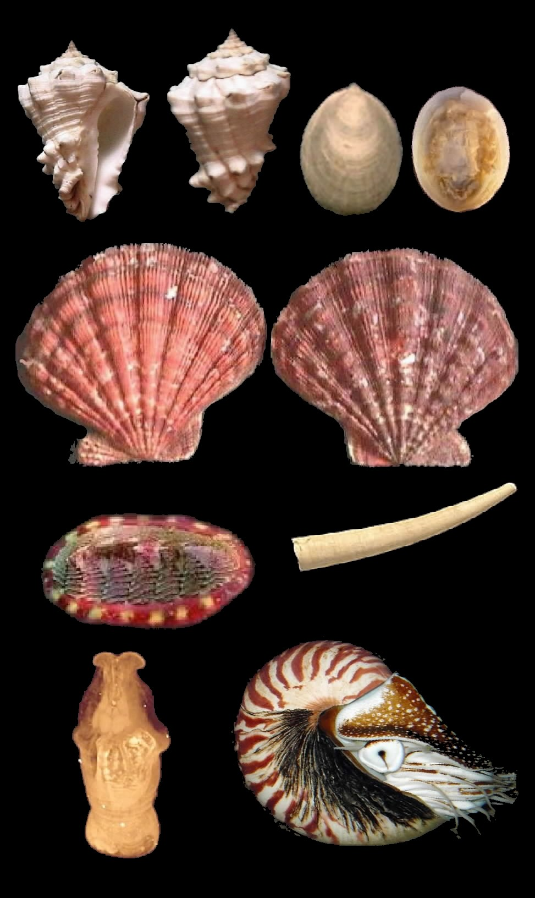
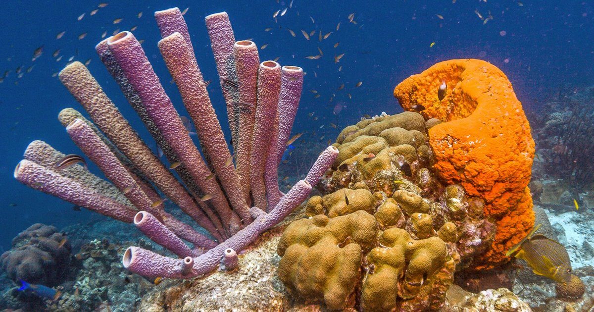
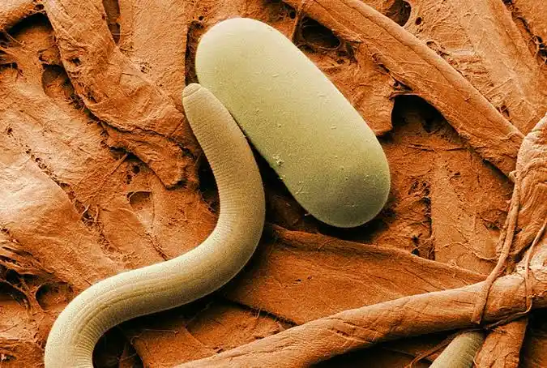

1. Artrópodos
2. Equinodermos
3. Moluscos
4. Esponjas
5. Nematodos
Exosqueleto de quitina y patas articuladas.

Simetría pentarradiada, esqueleto externo de piezas calcáreas.

Boca con rádula, pie muscular y manto alrededor de la concha.

Parazoos; sin simetría definida; cuerpo perforado por poros inhalantes.

Gusanos pseudocelomados de sección circular con cutícula quitinosa.
